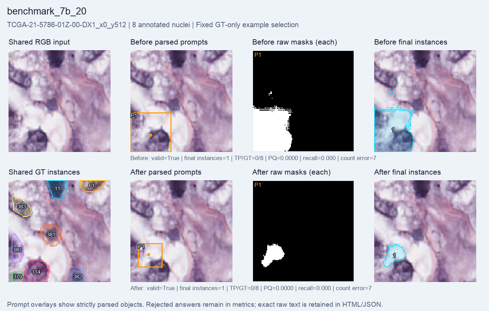

Benchmark timing subset: 8 crops, 4 patients · Status: verified_training_pilot
before: 8/8 final maps verified, 8/8 raw-mask files verified; after: 8/8 final maps verified, 8/8 raw-mask files verified
The run completed 20 optimizer steps; 19 had nonzero gradients and changed the adapter. Matching did not improve: TP stayed 1/51 and PQ decreased. The final instance count rose from 8 to 15, reducing count error without finding more true nuclei.
| Metric | Before | After |
|---|---|---|
| Macro PQ | 0.0158 | 0.0110 |
| Macro recall | 0.0179 | 0.0156 |
| Micro recall | 0.0196 | 0.0196 |
| Count MAE | 5.3750 | 4.5000 |
| Matched nuclei (TP) | 1 | 1 |
| Annotated nuclei | 51 | 51 |
| Final instances | 8 | 15 |
| Same-GT duplicate extras | 0 | 0 |
| Raw-mask overlap pairs | 0 | 0 |
| Valid answers | 8 | 8 |
| Foreground IoU | 0.0476 | 0.0170 |
| Reward (supporting diagnostic) | 1.0476 | 1.0170 |
Macro metrics weight crops equally; micro recall is total TP / total GT. Count MAE uses final instance counts. Invalid answers remain in the denominator. Duplicate extras refer to raw SAM masks matching the same GT above IoU 0.5; overlap pairs are a separate proxy.
| Item | Observed or planned value |
|---|---|
| Planned steps | 20 |
| Completed updates this run | 20 |
| Requested steps completed | Yes |
| Learning rate | 1e-05 |
| Seed | 42 |
| Training seconds | 51.260 |
| Before / after evaluation seconds | 9.83 / 11.76 |
| Total runner seconds | 94.214 |
| Training-step peak allocated GiB | 16.436 |
| Training-step peak reserved GiB | 17.064 |
| Adapter changed | Yes |
| Nonzero-gradient steps | 19 |
| Stop reason | None reported |
Unavailable means no saved value; it does not mean zero. Training time may include periodic evaluation and checkpoint work; total time also includes load, before/after evaluation and final saving.
This evaluated cohort contains no crop in this GT-count category. No unevaluated example is substituted.
TCGA-21-5786-01Z-00-DX1_x0_y512; 8 visible GT instances, including any edge fragments.

<answer>{"objects":[{"box":[1,137,90,224],"point":[45,187]}]}</answer><answer>{"objects":[{"box":[17,139,70,192],"point":[40,164]}]}</answer>{
"bbox_xyxy": [
0,
512,
128,
640
],
"instance_ids": [
11,
61,
114,
379,
380,
381,
382,
383
],
"instance_count": 8,
"truncated_instance_ids": [
11,
61,
114,
379,
382
],
"border_touching_instance_ids": [
11,
61,
114,
379,
382
],
"source_clipped_instance_ids": [],
"source_image_id": "TCGA-21-5786-01Z-00-DX1",
"patient_id": "TCGA-21-5786",
"split": "validation",
"source_image_member": "MoNuSeg 2018 Training Data/Tissue Images/TCGA-21-5786-01Z-00-DX1.tif",
"source_xml_member": "MoNuSeg 2018 Training Data/Annotations/TCGA-21-5786-01Z-00-DX1.xml",
"physical_spacing": {
"um_per_pixel": null,
"source": "not_verified",
"tiff_resolution_tags": {},
"note": "TIFF display resolution is not assumed to be physical tissue spacing; no resizing performed."
},
"id": "TCGA-21-5786-01Z-00-DX1_x0_y512",
"image_path": "images/TCGA-21-5786-01Z-00-DX1_x0_y512.png",
"mask_path": "masks/TCGA-21-5786-01Z-00-DX1_x0_y512.png",
"gt_mask": "masks/TCGA-21-5786-01Z-00-DX1_x0_y512.png",
"path_base": "manifest_directory",
"source_archive": "/Users/conny/Desktop/RLVR/RLVR/data/pathology/monuseg/MoNuSeg_2018_Training_data.zip",
"instance_count_definition": "Distinct nonzero IDs with at least one visible pixel; includes partial objects, not centroid-in-crop filtering.",
"sampling_condition": {
"crop_size": 128,
"grid_stride": 128,
"min_nuclei": 1,
"max_nuclei": 8,
"border_policy": "visible",
"zero_foreground_border": false,
"all_visible_instances_complete_in_source_mask": false,
"clipped_to_source_image_instances_excluded": false,
"ignored_pixels": 0,
"negative_roa_images_excluded": true,
"degenerate_polygon_images_excluded": true,
"partial_instance_policy": "All visible pixels of every included instance remain supervised; truncated IDs are listed per crop.",
"selection_bias": "At most 8 visible nuclei and selected engineering patients; not representative whole-slide performance."
},
"cohort_id": "monuseg2018_official_training30",
"cohort_protocol_sha256": "cd981d572043a068ca73679c72906377e76073b56a24c8cffddc3a8013fe1c87",
"image_sha256": "059b7e5a9271b601d887147cc574f20c9f2282d07b7ee5d7b6fdcf1e1dbd4189",
"mask_sha256": "5fb6690067c63a9d4b8736de5ac826ae8eb1eeaad69e34152d6dd74b94db5b43",
"image_pixels_sha256": "a7fde1f90832c9ed25d72234f3369a2995613229a9d77fb240aad1be8ac26d2f",
"source_image_sha256": "fbee9258bc8df706b9bba8b30a8064b4aede797a54224715af28564c342296ef",
"source_xml_sha256": "a02e0eea799db7d65ec4a4e6ed87262b304e3d043cb1e2cb22a6eaba667a128e"
}Full-mask engineering validation, selected 1-8-nucleus crops; validation reused and used for model selection; no official test or clinical/SOTA claim. Partial scores are not full-cohort estimates.
Verified summary and provenance · Every before answer · Every after answer
No model was run to create this report. Source records remain unchanged; accepted masks and duplicates were recomputed from saved artifacts where available. Raw-mask tiles show every saved mask, including empty masks.